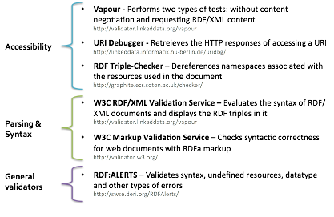

There are three different ways in which an RDF dataset can be validated. The first set (labelled accessibility in the Figure 15) checks that URIs are dereferenced correctly, using the HTTP client-server dialogue as described in section 3.5.2. A second set (labelled parsing and syntax) is used to validate the syntax of the RDF that is returned. Separate services are available for validating RDF/XML and RDFa markup. Finally, RDF:Alerts is a general purpose validation service for checking syntax and other problems such as undefined properties and classes and data type errors.

Figure 15: Ways of validating an RDF dataset.